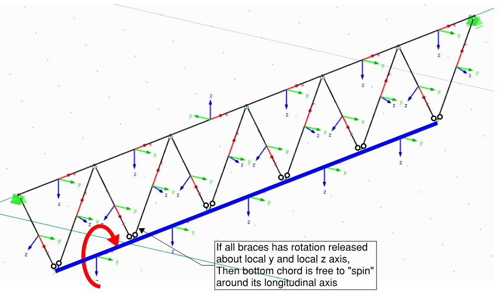

Dealing with instabilities #
Now, when the meshing is done and calculation starts to run.. great! You just run the calculations and find out that.. model is unstable! This is a normal step of “debugging” your model.
I am intentionally devoting a separate section to this because you will spend a lot of time dealing with this - and there is no easy way out. Or actually there is - after hours spend fixing your models, you will gradually fix most of the problems during modelling stage.
If you see where the instability is happening, and the reason is understandable – good! However, often it is completely unclear why/what is happening - The location of instability does not make sense;
“Save As” your model first – experience shows that you may frequently want to return to this broken model and re-start applying changes.
Some strategies/checks for dealing with instabilities:
-
Are there are multiple self-sufficient models (i.e. independently stable and disconnected) in one file, separate them!
-
It is likely that you will be running the calculation multiple times until you got things sorted out. Firstly, make the model stable at dead load case. You may switch off the calculation of other cases for quicker process. Or just re-run the deadload case if your program has option to run one case a time.
-
If the cause is not obvious, before doing anything else, try switching off non-linear “features” of your model.
- Is it actually instability or could it be that model just haven’t converged within the maximum number of iterations set in software?
- Are you using tension bracing, can it be that this causes instability if there are no lateral loads and self weight puts both braces in compression?
- Are you using compression-only supports or contact surfaces? Can it be that these are being relied upon for stability?
- Are you using non-linear materials?
-
Is the entire model stable respective to all 6 degrees of freedom?
- Any supports missed?
- Maybe you need to fix the rotation entire structure around vertical (typically “Z”) axis?
- Are you trying to model 2D structure in 3D space and forgot some
of degrees of freedom? A good example is a truss bottom chord.
“Spinning” bottom chord of a truss

-
Do nodes “node-out”? Are there two geometry nodes very very close to each other that are meant to be a single node? Are there two nodes at the same coordinates?
- You can switch on node numbers and see visually whether the numbers refer to the same place.
- Try “regenerating” your model. As mentioned above, regeneration has some downsides. But at least you will be confident that the problem is with geometry, not the supports or hinges.
- You can alternatively export coordinates of all nodes to Excel, sort by X , Y , Z then compare coordinates of adjacent points – if all three coordinates (or just one, or two) are differing just a tiny bit – this is likely to be a problem location. Use “conditional formatting” to highlight nearby nodes.
-
If it is a rotation causing instability, remove hinges step-by-step to see there exactly the instability is happening.
- The most common instability is to have both ends of the member torsionally released – this will instantly show instability as the member can rotate around its longitudinal axis;
- What about pinned supports? A classic situation in Autodesk Robot is to used default “pinned” support and have all the columns rotating about longitudinal axis;
- Is the instability happening in location with multiple members connecting an all of these having hinges defined at the node? Try removing hinge for one of the members – to ensure that node is not “free spinning” around itself.
- Some programs may also allow to put hinge at the end of “truss” member. If the member itself has no bending stiffness and a hinge is applied at end to release this stiffness – this causes instability.
-
Build your model from discrete parts that are stable on their own. If you have primary trusses and secondary trusses, make sure that each of elements are stable on its own and only then get them together in one model.
I especially encourage doing this if you are taking over work from someone else – this is a good way to gain understanding about structural behaviour of structure. -
For steel/timber structures (with mostly “bar” elements) – have a think whether the model can be simplified. E.g. do you need to model full truss for design of stability bracing? Maybe just a member representing the stiffness of truss is enough?